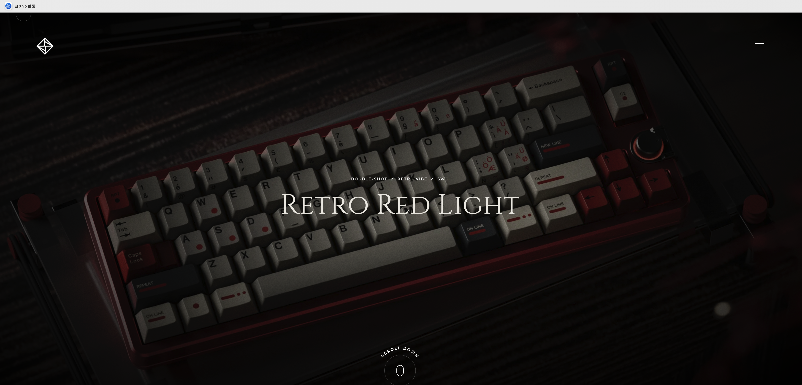

Independent keyboard design studio · Shanghai
Objects for the everyday ritual.
A quieter, editorial home for Mars Universe projects—built to let the work, materials, and stories hold the attention.
Selected projects
08 / 2026

Featured project · 01
Retro Red Light
Inspired by the Data General 6246 terminal keyboard. A compact project story replaces oversized transitions, keeping the visual rhythm and specifications easy to scan.
ManufacturerSWG
MaterialABS
MethodDouble-shot
Launch2026.Q4